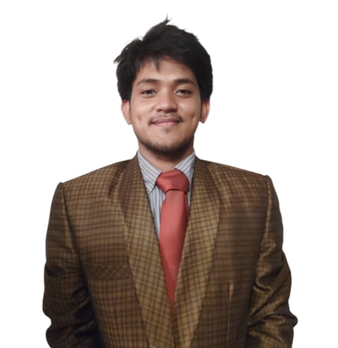

OMANDAM, ROMIE D.
Sampaguita Avenue, Mapayapa Village 2, Pasong Tamo, Quezon City. |
 |
I am Romie D. Omandam from Quezon City, Metro Manila, currently pursuing a Bachelor of Science in Information Technology at STI San Jose Del Monte, Bulacan. I am an aspiring Full Stack Developer with a strong passion for building responsive websites and dynamic web applications.
I enjoy turning ideas into functional and user-friendly systems. I continuously improve my skills in both frontend and backend development by practicing, creating projects, and exploring new technologies. My goal is to become a highly skilled and professional full stack developer who can contribute to innovative and impactful technology solutions.
I am hardworking, disciplined, adaptable, and eager to learn. I work efficiently both independently and as part of a team, and I am always open to constructive feedback to improve my technical and problem-solving abilities.
| Date of Birth | : March 13, 2003 |
| Age | : 22 years old |
| Place of Birth | : Pagadian City |
| Gender | : Male |
| Height | : 5'7 |
| Weight | : 56kg |
| Citizenship | : Filipino |
| Civil Status | : Single |
| Religion | : Catholic |
| Father's Name | : Moises D. Omandam |
| Occupation | : Pattern maker, Designer, Tailor, Cutter |
| Mother's Name | : Rogelia D. Omandam |
| Occupation | : Chef |
| Language Spoken | : Filipino / English |
Systems Technology Institute
STI Academic Center, Quirino Highway, Tungkong Mangga,
San Jose Del Monte City, Bulacan
3rd Year - Bachelor of Science in Information Technology
2026 - Present
Bestlink College of the Philippines
#1071 Brgy. Kalayaan, Quirino Highway, Novaliches, Quezon City
Jose Rizal High School
Kalapati St., Quezon City, Metro Manila, Philippines
Dona Juana Elementary School
Sta Catalina Street, Quezon City, Philippines
© 2026 Romie D Omandam. All rights reserved.